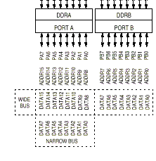
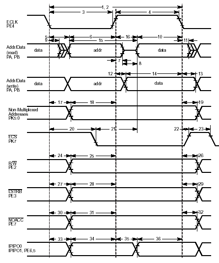
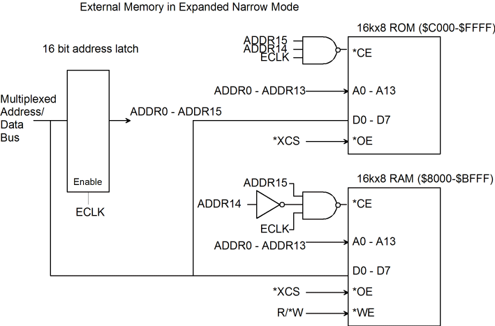

| Previous Section | Next Section | Index | Questions | Search the Text |
In order to reduce the number of pins necessary on the microcontroller, many microcontrollers multiplex the address and data busses. In this arrangement, the address is presented on the bus and must be externally latched because the bus must then be used for data. The MC9S12DP256 microcontroller is primarily intended for use in single chip mode because it has a large amount of on-chip RAM and ROM. If it is desired to use this part in Expanded Narrow or Wide mode, the shared address and data bus design is employed.
The following illustration shows the data and address connections to the microcontroller. In addition, port K provides 6 bits of extended addressing, described in the memory expansion section, and two chip selects, ECS and XCS. Port E provides *LSTRB, R/*W, and ECLK signals.

we see that there are 16 address lines, giving a 64k byte address space. But the lines are also used for data. In Expanded Wide Mode, all 16 lines are used, while in Expanded Narrow Mode only the most significant 8 are used. Looking in the Technical Specifications, we see:

The address must be latched on the leading edge of ECLK. A new control signal *XCS (External Chip Select) can be used in read operations to enable the memory device to drive the data bus - we can't simply connect *OE to *CE. (*XCS has the same timing as the *ECS signal in the diagram above.) However some designs simply enable the output when ECLK & R/*W is true.
A transparent latch is used to hold the address. The latch is transparent (Input connects to output) when the enable input is asserted, and the output is held when the enable input is low. Using the Expanded Narrow Mode, our memory can be connected as shown in this partial schematic:

Timing considerations are very difficult with this part and design, so typically a low clock speed or clock stretch is used. The HCS12 also uses a memory expansion scheme which also must be taken into account in order to use the external interface. In a typical application, the internal Flash ROM would still be used and all external memory would appear in the $8000-$BFFF address range, the exact 16K memory "page" selected using port K. See Memory Expansion for details.
Continue with Using Chip Selects.
Return to the Index.